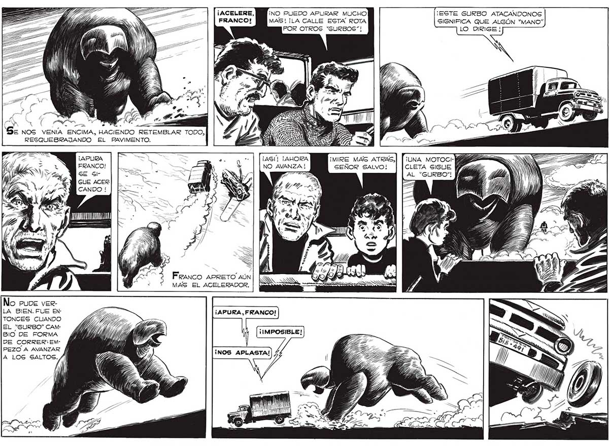

¡ACELERE, ¡NO PUEDO APURAR MUCHO ¡ESTE GURBO ATACANDONOS FRANCO! MAS! ¡LA CALLE ESTA ROTA SIGNIFICA QUE ALGÚN “MANO” POR OTROS “GURBOS”"! LO DIRIGE ! 1 A i LUN A A. - "TZ o Ll. a Se NOS VENÍA ENCIMA, HACIENDO RETEMBLAR TODO, RESQUEBRAJANDO EL PAVIMENTO. CN > Ñ O Y “| | ¡AS ¡AHORA ¡MIRE MAS ATRAS,| [ ¡una MOTOCI-A FRANCO! | | — E NO AVANZA ! SEÑOR SALVO! | [CLETA SIGUE SE Gl | AL “GURBO"! GUE ACER LD ANMOA F ' a Of 81 a RANCO APRETO AUN collado A MAS EL ACELERADOR. === SS No puve verLA BIEN. FUE EN- 33 ¡APURA, FRANCO! TONCES CUANDO EL "GURBO” CAM- IPOD HS : BIO DE FORMA | : dla DE CORRER:EM- ZAS PEZO A AVANZAR S : A LOS SALTOS. /| A, O A
